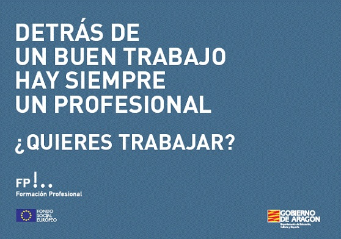

La Formación Profesional comprende el conjunto de acciones formativas que capacitan para el desempeño cualificado de las diversas profesiones, el acceso al empleo y la participación activa en la vida social, cultural y económica. ¿Cómo está organizada? Los títulos de Formación Profesional se agrupan en 26 familias profesionales, que responden a las necesidades demandadas por el sistema productivo y a una misma actividad productiva. Dentro de cada familia profesional se incluyen un conjunto de ciclos formativos con una organización modular, de duración variable, constituidos por áreas de conocimiento teórico-prácticas en función de diversos campos profesionales. Los Ciclos Formativos habitualmente, tienen una duración de dos cursos académicos, pueden ser:
Todos los ciclos formativos incluyen un módulo de Formación en Centros de Trabajo (FCT) cuyo objetivo es completar la adquisición de competencias profesionales propias de cada título alcanzadas en el centro educativo con una duración de 400 horas aproximadamente. Además, en todos los ciclos formativos de grado superior y en algunos ciclos de grado medio, se incluye un módulo profesional de Proyecto, de acuerdo con las características de la actividad laboral del ámbito del ciclo formativo, y que incluye aspectos relativos al ejercicio profesional y a la gestión empresarial. ¿Cómo se puede acceder? Se puede acceder directamente si se poseen los requisitos de titulación. En caso contrario, se puede acceder mediante la realización de una prueba de acceso. Grado Medio:
Grado Superior:
¿En qué modalidades se puede estudiar?
¿Dónde se puede estudiar? Se puede estudiar en los Institutos de Educación Secundaria que impartan enseñanzas de Formación Profesional (IES), en los Institutos de Formación Profesional Específica (IFPE), y en general, en centros educativos públicos y privados autorizados para impartir estas enseñanzas. ¿Qué titulación se obtiene al terminar? Título de Técnico de la correspondiente profesión, para quienes superen un ciclo formativo de grado medio. Título de Técnico Superior de la correspondiente profesión, para quienes superen un ciclo formativo de grado superior.